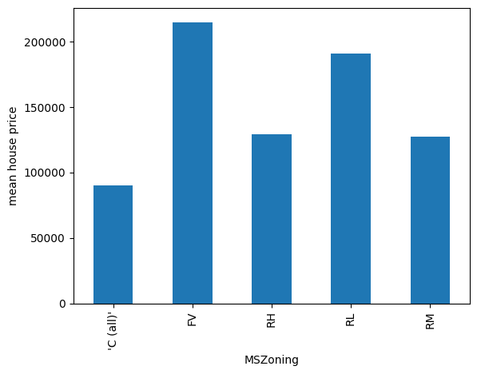
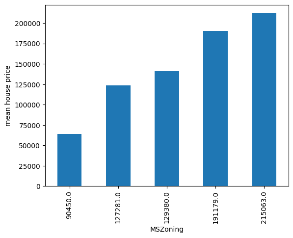
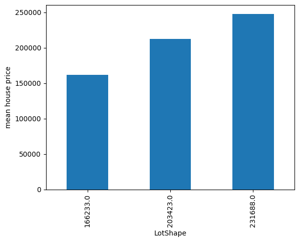

DecisionTreeEncoder#
Categorical encoding is the process of transforming the strings of categorical features into numbers. Common procedures replace categories with ordinal numbers, counts, frequencies, or the target mean value.
We can also replace the categories with the predictions made by a decision tree based on that category value.
The process consists of fitting a decision tree using a single feature to predict the target. The decision tree will try to find a relationship between these variables, if one exists, and then we’ll use the predictions as mappings to replace the categories.
The advantage of this procedure is that it captures some information about the relationship between the variables during the encoding. And if there is a relationship between the categorical feature and the target, the resulting encoded variable would have a monotonic relationship with the target, which can be useful for linear models.
On the downside, it could cause overfitting, and it adds computational complexity to the pipeline because we are fitting a tree per feature. If you plan to encode your features with decision trees, make sure you have appropriate validation strategies and train the decision trees with regularization.
DecisionTreeEncoder#
The DecisionTreeEncoder() replaces categories in the variable with
the predictions of a decision tree.
The DecisionTreeEncoder() uses Scikit-learn’s decision trees under the hood.
As these models can’t handle non-numerical data, the DecisionTreeEncoder() first
replaces the categories with ordinal numbers and then fits the trees.
You have the option to encode the categorical values into integers assigned arbitrarily
or ordered based on the mean target value per category (for more details, check the
OrdinalEncoder(), which is used by DecisionTreeEncoder() under the hood).
You can regulate this behaviour with the parameter encoding_method. As decision trees
are able to pick non-linear relationships, replacing categories with arbitrary numbers
should be enough in practice.
After this, the transformer fits a decision tree using this numerical variable to predict the target. Finally, the original categorical variable is replaced by the predictions of the decision tree.
In the attribute encoding_dict_ you’ll find the mappings from category to numerical
value. The category is the original value and the numerical value is the prediction
of the decision tree for the category.
The motivation for the DecisionTreeEncoder() is to try and create monotonic
relationships between the categorical variables and the target.
Python example#
Let’s look at an example using the Titanic Dataset. First, let’s load the data and separate it into train and test:
from sklearn.model_selection import train_test_split
from feature_engine.datasets import load_titanic
from feature_engine.encoding import DecisionTreeEncoder
X, y = load_titanic(
return_X_y_frame=True,
handle_missing=True,
predictors_only=True,
cabin="letter_only",
)
X_train, X_test, y_train, y_test = train_test_split(
X, y, test_size=0.3, random_state=0,
)
print(X_train[['cabin', 'pclass', 'embarked']].head(10))
We will encode the following categorical variables:
cabin pclass embarked
501 M 2 S
588 M 2 S
402 M 2 C
1193 M 3 Q
686 M 3 Q
971 M 3 Q
117 E 1 C
540 M 2 S
294 C 1 C
261 E 1 S
We set up the encoder to encode the variables above with 3 fold cross-validation, using
a grid search to find the optimal depth of the decision tree (this is the default
behaviour of the DecisionTreeEncoder()). In this example, we optimize the
tree using the roc-auc metric.
encoder = DecisionTreeEncoder(
variables=['cabin', 'pclass', 'embarked'],
regression=False,
scoring='roc_auc',
cv=3,
random_state=0,
ignore_format=True)
encoder.fit(X_train, y_train)
With fit() the DecisionTreeEncoder() fits 1 decision tree per variable. The
mappings are stored in the encoding_dict_:
encoder.encoder_dict_
In the following output we see the values that will be used to replace each category in each variable:
{'cabin': {'M': 0.30484330484330485,
'E': 0.6116504854368932,
'C': 0.6116504854368932,
'D': 0.6981132075471698,
'B': 0.6981132075471698,
'A': 0.6981132075471698,
'F': 0.6981132075471698,
'T': 0.0,
'G': 0.5},
'pclass': {2: 0.43617021276595747,
3: 0.25903614457831325,
1: 0.6173913043478261},
'embarked': {'S': 0.3389570552147239,
'C': 0.553072625698324,
'Q': 0.37349397590361444,
'Missing': 1.0}}
Now we can go ahead and transform the categorical variables into numbers, using the predictions of these trees:
train_t = encoder.transform(X_train)
test_t = encoder.transform(X_test)
train_t[['cabin', 'pclass', 'embarked']].head(10)
We can see the encoded variables below:
cabin pclass embarked
501 0.304843 0.436170 0.338957
588 0.304843 0.436170 0.338957
402 0.304843 0.436170 0.553073
1193 0.304843 0.259036 0.373494
686 0.304843 0.259036 0.373494
971 0.304843 0.259036 0.373494
117 0.611650 0.617391 0.553073
540 0.304843 0.436170 0.338957
294 0.611650 0.617391 0.553073
261 0.611650 0.617391 0.338957
Rounding the predictions#
The predictions of the decision tree can have a lot of decimals after the comma. When this happens, reading the categorical variables might be confusing. We can control the precision of the output to return less decimals after the comma like this:
encoder = DecisionTreeEncoder(
variables=['cabin', 'pclass', 'embarked'],
regression=False,
scoring='roc_auc',
cv=3,
random_state=0,
ignore_format=True,
precision=2,
)
encoder.fit(X_train, y_train)
Now, the mappings for each category contain 2 decimals at most:
encoder.encoder_dict_
In the following output we see the values that will be used to replace each category in each variable:
{'cabin': {'M': 0.3,
'E': 0.61,
'C': 0.61,
'D': 0.7,
'B': 0.7,
'A': 0.7,
'F': 0.7,
'T': 0.0,
'G': 0.5},
'pclass': {2: 0.44, 3: 0.26, 1: 0.62},
'embarked': {'S': 0.34, 'C': 0.55, 'Q': 0.37, 'Missing': 1.0}}
Now we can go ahead and transform the categorical variables into numbers, using the predictions of these trees:
train_t = encoder.transform(X_train)
test_t = encoder.transform(X_test)
train_t[['cabin', 'pclass', 'embarked']].head(10)
We can see the encoded variables below:
cabin pclass embarked
501 0.30 0.44 0.34
588 0.30 0.44 0.34
402 0.30 0.44 0.55
1193 0.30 0.26 0.37
686 0.30 0.26 0.37
971 0.30 0.26 0.37
117 0.61 0.62 0.55
540 0.30 0.44 0.34
294 0.61 0.62 0.55
261 0.61 0.62 0.34
We can also revert the data to its original representation as follows:
revert = encoder.inverse_transform(test_t)
revert[['cabin', 'pclass', 'embarked']].head(10)
In the following output we see that with inverse transform, we obtain the original categories from the tree predictions:
cabin pclass embarked
1139 M 3 S
533 M 2 S
459 M 2 S
1150 M 3 S
393 M 2 S
1189 G 3 S
5 C 1 S
231 C 1 S
330 M 2 S
887 M 3 S
Collisions#
This encoder can lead to collisions. Collisions are instances where different categories are encoded with the same number. It is useful to reduce cardinality. On the other hand, if the mappings are not meaningful we might lose the information contained in those categories.
When there are collisions, inverse_transform would revert to only 1 of the categories,
so some of the original information will be lost with the inverse transformation.
Unseen categories#
Unseen categories are labels that appear in the test set, or in live data, that were not present in the training set. As the decision tree is trained on the training set, there will only be mappings for seen categories.
By default, DecisionTreeEncoder() will ignore unseen categories, which means that
they will be replaced by NAN after the encoding. You can instruct the encoder to raise an
error when it encounters unseen categories (parameter unseen). Alternatively, this
encoder allows you to set up an arbitrary number to replace unseen categories
(param fill_value).
Monotonic variables#
We mentioned previously that the idea of this encoding is to create features whose values grow monotonically with the target. Let’s explore that. We’ll use the house prices dataset:
import matplotlib.pyplot as plt
from sklearn.datasets import fetch_openml
from sklearn.model_selection import train_test_split
from feature_engine.encoding import DecisionTreeEncoder
# Load dataset
X, y = fetch_openml(name='house_prices', version=1,
return_X_y=True, as_frame=True)
X_train, X_test, y_train, y_test = train_test_split(
X, y, test_size=0.3, random_state=42)
Let’s now plot the mean house price per category of the variable MNZoning:
y_train.groupby(X_train["MSZoning"]).mean().plot.bar()
plt.ylabel("mean house price")
plt.show()
In the following image, we see that there isn’t a monotonic relationship between the current order of the categories and the house price:
Let’s explore another variable:
y_train.groupby(X_train["LotShape"]).mean().plot.bar()
plt.ylabel("mean house price")
plt.show()
In the following image we see that there isn’t a monotonic relationship between LotShape
and the house price either:
Let’s now encode these variables using decision trees:
encoder = DecisionTreeEncoder(
variables=["MSZoning", 'LotShape'],
regression=True,
cv=3,
random_state=0,
ignore_format=True,
precision=0,
)
encoder.fit(X_train, y_train)
Let’s check out the created mappings:
encoder.encoder_dict_
Below we see the values that will be used to replace each category:
{'MSZoning': {'RL': 191179.0,
'RM': 127281.0,
'FV': 215063.0,
"'C (all)'": 90450.0,
'RH': 129380.0},
'LotShape': {'Reg': 166233.0,
'IR1': 203423.0,
'IR2': 231688.0,
'IR3': 231688.0}}
Let’s now encode the variables:
train_t = encoder.transform(X_train)
test_t = encoder.transform(X_test)
print(train_t[["MSZoning", 'LotShape']].head(10))
We see the encoded variables in the following output:
MSZoning LotShape
135 191179.0 166233.0
1452 127281.0 166233.0
762 215063.0 166233.0
932 191179.0 203423.0
435 191179.0 231688.0
629 191179.0 166233.0
1210 191179.0 166233.0
1118 191179.0 166233.0
1084 191179.0 231688.0
158 215063.0 166233.0
And now, let’s plot the mean house price per category again, after the encoding:
y_test.groupby(test_t["MSZoning"]).mean().plot.bar()
plt.ylabel("mean house price")
plt.show()
In the following image we see that the categories are ordered in a way that created a monotonic relationship with the target variable:
Let’s repeat that for the second variable:
y_test.groupby(test_t["LotShape"]).mean().plot.bar()
plt.ylabel("mean house price")
plt.show()
In the following image we also see a monotonic relationship after the encoding:
Note#
Not every encoding will result in monotonic relationshops. For that to occur there needs to be some sort of relationship between the target and the categories that can be captured by the decision tree. Use with caution.
Additional resources#
In the following notebook, you can find more details into the DecisionTreeEncoder()
functionality and example plots with the encoded variables:
For more details about this and other feature engineering methods check out these resources:

Feature Engineering for Machine Learning#
Or read our book:

Python Feature Engineering Cookbook#
Both our book and course are suitable for beginners and more advanced data scientists alike. By purchasing them you are supporting Sole, the main developer of Feature-engine.